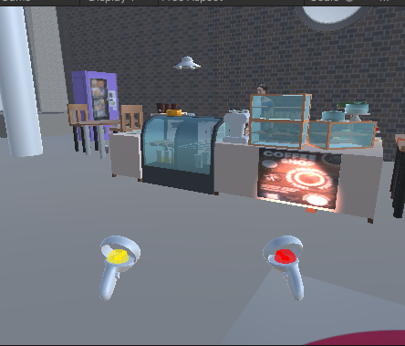
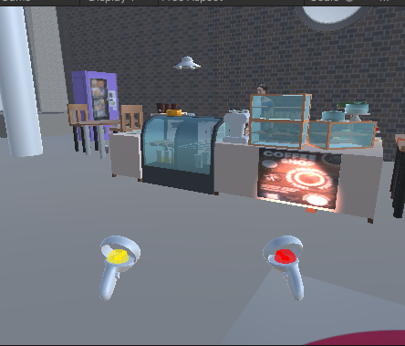

This project mainly focuses on deploying unity on the oculus quest and playing around in the area via creating your own game boundary. It also involves features such as interactions with objects and physics. Moreover, it involves a shop scenario where one could sell stuff and includes items that are animated using the C# script. Lastly, there are 3d sounds that amplify as the user would get closer to the 3d objects.
These are a few examples of how it shall look on the screen:

Here is a link to the project:
Project 2
Link to youtube video
The following methods were used to build this application:
1. Unity -> Here's a link to download the latest version of Unity(2021.3.6f1): Unity A few citations of the sources that were used for this project are as follows:
1. 3D Models:
1. Water Bottle: https://3dwarehouse.sketchup.com/model/fec05c85454edafc4310636931b68fdb/Water-Bottle?login=true
2. Soda Can: https://3dwarehouse.sketchup.com/model/b45716cd72f1e9172fbee880b9f634b4/Soda-Can
3. Coffee Machine (1MB): https://3dwarehouse.sketchup.com/model/2283f808-3162-46aa-a3bb-e10be61c90cf/Coffee
4. Oven: https://3dwarehouse.sketchup.com/model/0814d526-cd20-421e-8604-01addea9526e/JZ-trouba-siemens-compact-45
5. Random Black Speaker (set near a decoration): https://3dwarehouse.sketchup.com/model/2034f891fe2d1e79bb51f8b36601764d/speaker
6. Coffee Syrup - Torani: https://3dwarehouse.sketchup.com/model/cbae9a92-03cf-4912-a4c3-c468e53662cd/Torani-Syrup-Bottle-with-Pump
7: Coffee Syrup - Monin: https://3dwarehouse.sketchup.com/model/3be4a495-16f2-4b51-8340-26bf7d02c2b5/Monin-Coffee-Syrup
8. Square Register: https://3dwarehouse.sketchup.com/model/b72a5c99-88ec-4077-a218-b5ee4706ed04/register
9. Central Perk Coffee Shop Sign: https://3dwarehouse.sketchup.com/model/649b46ac-74a9-4152-8cd8-cc445663e173/Central-Perk-Sign
10. Coffee and Family Decoration (2MB): https://3dwarehouse.sketchup.com/model/cdcc32fb-66f7-426a-913f-48028c3940a1/Cute-coffee-sign
11. Plant Decor: https://3dwarehouse.sketchup.com/model/6b30c1b5-cc3d-4b34-ae2c-329dfebe5324/Plant
12. Napkin Dispenser (or make own): https://3dwarehouse.sketchup.com/model/ud1c48545-f1d4-49bf-9899-1ad55bab4a35/Napkin-Dispenser
13. Table for Decoration: https://3dwarehouse.sketchup.com/model/u1890c860-8e9b-4304-85b5-87418a16e65c/DLSM-1500x550-high-wooden-bar-table-with-tubular-frame
14. Spices Decoration - 1: https://3dwarehouse.sketchup.com/model/e7cebb84-a424-420a-8d97-30414ab77e3f/STORAGE-JARS
15. Spices Decoration - 2: https://3dwarehouse.sketchup.com/model/5555ad27-5f06-4803-9dac-dedbc9577f6f/Spices-for-table
16. Sweatshirt Merch: https://3dwarehouse.sketchup.com/model/341d7afb69ce0fea520c125e84c082ee/Heather-Grey-T-shirt
17. Light Bulb: "Incandescent Light Bulb" (https://skfb.ly/6U99u) by AleixoAlonso is licensed under Creative Commons Attribution (http://creativecommons.org/licenses/by/4.0/).
18. Cue: "Pool table" (https://skfb.ly/owFtD) by MH is licensed under Creative Commons Attribution (http://creativecommons.org/licenses/by/4.0/).
19. Pool table: "Pool table" (https://skfb.ly/owFtD) by MH is licensed under Creative Commons Attribution (http://creativecommons.org/licenses/by/4.0/).
20. Cake: "Cake" (https://skfb.ly/orBTL) by nathanielmoore is licensed under Creative Commons Attribution (http://creativecommons.org/licenses/by/4.0/).
21. Strawberry Sandwich: "Strawberry Sandwich" (https://skfb.ly/6WHW7) by Citrus is licensed under Creative Commons Attribution (http://creativecommons.org/licenses/by/4.0/).
22. Juice: "Juice" (https://skfb.ly/6wsXF) by Multipainkiller Studio is licensed under Creative Commons Attribution (http://creativecommons.org/licenses/by/4.0/).
23. News Paper: "Newspaper" (https://skfb.ly/6ZUru) by Qu3st10n is licensed under CC Attribution-NonCommercial-ShareAlike (http://creativecommons.org/licenses/by-nc-sa/4.0/).
24. Cutlery Set: "Cutlery Set" (https://skfb.ly/6QVDw) by DKDTheGreat1 is licensed under Creative Commons Attribution (http://creativecommons.org/licenses/by/4.0/).
25. Coffee Bean: "Coffee Bean Low-Poly" (https://skfb.ly/6WuBE) by muhuk is licensed under CC Attribution-NonCommercial-ShareAlike (http://creativecommons.org/licenses/by-nc-sa/4.0/).
26. Trash Can: "Trash Can. Low Poly" (https://skfb.ly/6zLwH) by katykate is licensed under Creative Commons Attribution (http://creativecommons.org/licenses/by/4.0/).
27. Vending Machine: "Vending Machine - low poly" (https://skfb.ly/6xuyo) by Pasu is licensed under Creative Commons Attribution (http://creativecommons.org/licenses/by/4.0/).
28. Milk: "SUPER AWESOME MILK CARTON" (https://skfb.ly/DnrM) by vabart is licensed under Creative Commons Attribution (http://creativecommons.org/licenses/by/4.0/).
29. Granola bars: "Granola Bar (very low poly)" (https://skfb.ly/6VEsp) by andrewfrueh is licensed under Creative Commons Attribution (http://creativecommons.org/licenses/by/4.0/).
30. Bowl: "China Bowl low poly" (https://skfb.ly/ouGJP) by m31odyr is licensed under Creative Commons Attribution (http://creativecommons.org/licenses/by/4.0/).
31. Wall clock: "Wall Clock" (https://skfb.ly/6V7Ou) by FelipeMSX is licensed under Creative Commons Attribution (http://creativecommons.org/licenses/by/4.0/).
2. Sounds:
1. Oven - ding: https://soundbible.com/2218-Service-Bell-Help.html
2. Running Water: https://freesound.org/people/sterferny/sounds/382322/
3. Speaker with the music: https://soundbible.com/1381-Channel-Surfing.html
4. Ringing phone: https://soundbible.com/1619-Music-Box.html
5. People talking: https://soundbible.com/1664-Restaurant-Ambiance.html
6. Tickets - ching: https://freesound.org/people/michael_grinnell/sounds/464420/
7. Espresso - steam: https://freesound.org/people/brassajay/sounds/555387/
3. Textures:
1. Chair: https://unsplash.com/photos/JH_R66BihvA
2. Table: https://unsplash.com/photos/JH_R66BihvA
3. High Top Chair/Table: https://unsplash.com/photos/JH_R66BihvA
4. Donut: https://www.alamy.com/donut-glaze-seamless-pattern-cream-texture-with-topping-of-colorful-sprinkles-and-beads-on-chocolate-background-food-bakery-decoration-vector-eps8-image341594370.html
5. Muffin: https://www.google.com/url?sa=i&url=https%3A%2F%2Fwww.dreamstime.com%2Fstock-illustration-cookies-texture-baking-background-muffin-dark-brown-image81988902&psig=AOvVaw3_UAjrMsahuQ_RA9g4y-bj&ust=1666125120397000&source=images&cd=vfe&ved=0CAwQjRxqFwoTCPjylvKN6PoCFQAAAAAdAAAAABAG
6. Cake Pop: https://www.alamy.com/vector-seamless-pattern-of-pink-donut-glaze-image384887222.html?imageid=B015E7A2-AE08-42E3-8F4C-519E4964ED76&p=261024&pn=6&searchId=eed711374e05c4a41b806fbce3724617&searchtype=0
7. Coffee Cup: https://img.freepik.com/premium-vector/texture-pattern-background-cafe-restaurant-from-coffee-cups-kitchen_394307-2802.jpg?w=2000
8. Cutlery Set: https://istockphoto.6q33.net/c/38919/1141943/4205?u=https://www.istockphoto.com/vector/abstract-strong-grey-metal-background-steel-polished-texture-gm1290188961-385647781&sharedid=www.vecteezy.com&subId1=search-top-iscroll-modal-v4-test-control&subId2=21bc1037-08de-45ca-a2b1-405fa0d81c43&adtype=vector&adplacement=SRP_2_small&subId3=silver-texture_1290188961_top
9. Coffee Bean: https://d2gg9evh47fn9z.cloudfront.net/1600px_COLOURBOX3863010.jpg
Here are few pictures of how these designs shall look like:

A little discusion post regarding the use of Virtual Reality in real life:
In this world of virtual reality innovations and research is continuing to grow. This project helps us understand the basic difference between a virtua world compared to a real world.
The previous project talked about how iun an augmented reality a person could possibly make an interactive design for users to interact with however this project mainly focuses on the key aspect of using a quest.
In the initial stages of the project the simulator serves as a helping hand and lets us run the project and test it out. Since the simulator would just be a display it only allows us to interact with the objects using WASD keys.
However, the quest allows us to stay in a virtual environment where the design that is displayed in the same spectrum as we stand in a room full of chairs and tables is different.
This gives us a real life experience of being in a completly different world when we are actually not physically present in that place. Thus when we use the quest we just have two controllers that act like our arms and let us go through the multiple options available to us in the very same virtual environment.
When using a simulator the keys do not give an interactive experience as the quest since we are just moving around using the keys and grabbing items using the mouse.
However, the quest will allow us to grab the items with the controllers that actually represent our arms in a virtual world which makes it more interactive.
Moreover, the frame rate in the simulator would be a lot higher than the quest since the quality and the graphics and processing of a computer would be a lot better than a quest.
If we try and improve the quality of the items present in our program we would need to make sure to reduce the polygons and the quality of the objects in general to run this program smoothly and efficiently without any lag.
This also implies the fact that simulators would have a better standing if one had to better the design or the quality of a place or an object or had to add more detailing to their project compared to a quest.
And as we discussed in the last project that simulators are used for training pilots, firefighters, other trainees that might be under a lot of threat during an actual real life flight or a military operation, etc. correctly fits the criteria here.
One could add a lot more detail to the simulator that shall be more precise. Virtual reality is a growing field and soon there shall be additional graphics and better quality involved when it comes to using virtual reality in our day to day lives.
Here's a link that talks about it more